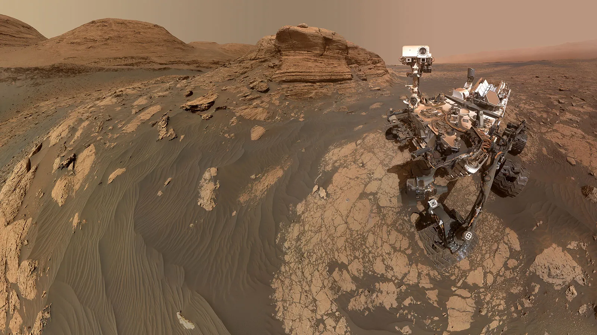

Exploring the Red Planet
For decades, scientists have sent sophisticated robots to study Mars up close. From the first successful flyby in 1965 to the current rovers and orbiters, each mission has uncovered new secrets about this fascinating world.
Image credit: NASA
Mars Exploration Timeline
1960s-1970s
The first successful Mars flyby was Mariner 4 in 1965. This mission provided the first close-up images of the Martian surface. Viking 1 and 2 became the first spacecraft to successfully land on Mars in 1976.
1990s-2000s
Mars Global Surveyor mapped the planet from 1997-2006. The Pathfinder mission delivered the first rover, Sojourner, to Mars in 1997. In 2004, Spirit and Opportunity rovers began their missions, with Opportunity operating for over 14 years.
2010s
Curiosity rover landed in 2012 and continues to operate today. MAVEN began studying Mars' atmosphere in 2014. The InSight lander arrived in 2018 to study the planet's interior.
2020s
Perseverance rover and Ingenuity helicopter arrived in 2021. Ingenuity became the first aircraft to fly on another planet. Multiple nations launched missions, including China's Tianwen-1 mission and the UAE's Hope orbiter.
Current Missions
Perseverance
NASA's most advanced rover is exploring Jezero Crater, searching for signs of ancient microbial life, and collecting samples for future return to Earth.
Image credit: NASA

Ingenuity
This small helicopter has proven that powered, controlled flight is possible in the thin Martian atmosphere, opening new possibilities for future exploration.
Image credit: NASA
Hope Orbiter
The United Arab Emirates' orbiter is studying Mars' weather systems and atmospheric conditions throughout the Martian year.
Image credit: NASA
Future Exploration
Planned missions to Mars include:
- Mars Sample Return - A joint NASA-ESA mission to collect and return samples gathered by Perseverance
- ExoMars Rover - A European-Russian rover designed to search for biosignatures
- Human missions - Multiple space agencies and private companies are developing plans for crewed missions to Mars in the 2030s
Image credit: NASA